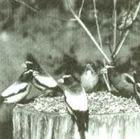
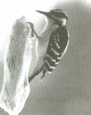
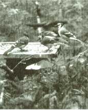

Feeding Your Feathered Friends
THE EASIEST AND SUREST WAY TO attract birds to your backyard is to provide supplemental food for them. People are sometimes deterred from feeding their backyard birds by the belief that, once they start feeding, they must continue throughout the winter because the birds will become dependent on the supplemental food. This is untrue.
Recent studies conducted at the University of Wisconsin and Pennsylvania State University prove conclusively that even the most feeder-habituated birds forage for at least 80 percent of their diet.
The question, then, is no longer to feed or not to feed but what to feed? Corn for just chickadees or crossbills as well? How does one attract the seed-snubbing orioles? What is proper finch cuisine? Here's a short course in avian epicure.
The birds most likely to come to a bird feeder are those that eat seeds, so seeds are what you should offer. But what kind? A major study of birdseed preferences was conducted by the U.S. Fish and Wildlife Service in 1980. Two seeds were clear favorites: black-oil sunflower seeds and white proso millet. Other desirable seed foods in the study include safflower seeds, thistle (Niger) seeds, peanuts, and corn.
All birds love sunflower seeds. The large, white- or gray-striped seeds that humans eat are attractive to birds, but they strongly prefer the smaller black-oil type. Black-oil sunflower seeds have several advantages over the striped kind. They have a higher mean-to-shell ratio; are more nutritious with a higher fat content; have thinner shells that are easier for small birds to crack; are smaller and thus easier to manipulate in the bill; and are cheaper.
Sunflower seeds are particularly attractive to chickadees, cardinals, nuthatches, pine siskins, redpolls, titmice, finches, crossbills, and grosbeaks.
Next to black-oil sunflower seeds, these tiny, round, white seeds are the food most birds prefer. Millet is also very inexpensive and stores well.
White proso millet is a good food for attracting groundfeeding birds such as doves, juncos, and sparrows. Cardinals, painted buntings, pine siskins, purple finches, towhees, cowbirds, and redpolls will also eat millet. Northern bobwhite and waterfowl such as mallard ducks are attracted to millet as well. Except for the difference in color, red is basically the same as white, and birds will take either.
Birds that like sunflower seeds will also enjoy safflower seeds. Crows, grackles, and squirrels don't like the taste, however, so safflower is a good choice if unwanted critters are a problem. The drawback is that safflower seeds are considerably more expensive than sunflower seeds. Your birds may be a little hesitant about taking safflower seeds when you first offer them. Mix the seeds in with sunflower seeds until they get used to the idea. Cardinals are particularly fond of safflower seeds. To encourage these beautiful, somewhat shy birds, set up a separate safflower-seed feeder away from your other feeders. Look for the cardinals especially at dawn and dusk. Before the other birds are stirring and after they have gone to roost, you will hear the soft call of the cardinals at your feeder.
To attract goldfinches, house finches, purple finches, redpolls, pine siskins, juncos, and indigo buntings, these tiny black seeds are magic. It is markedly more expensive than sunflower seed, and the price has been going up. On the other hand, since only some of the birds in your backyard will eat it, you will use a lot less of it, and the birds that eat Niger are some of the most colorful. Some manufacturers offer a cheaper "finch mix" that is about half Niger and half other small seeds. The birds will pick out the Niger seed and drop the rest on the ground for the sparrows. Stick to pure Niger, offered in a tube feeder with tiny holes.
Whole shelled peanuts are a very attractive food for blue jays, tufted titmice, chickadees, goldfinches, woodpeckers, and white-throated sparrows. Even shy birds that do not usually come to feeders, including ruby-crowned kinglets and yellow-rumped warblers, can be attracted with peanuts. Peanuts, however, will also attract eager squirrels in record time. Peanut hearts (not the same thing as peanut pieces) have a special appeal to starlings and not much appeal to any other bird. If you want to keep starlings away from the feeder, avoid peanut hearts.
Blue jays and woodpeckers can crack open peanuts in the shell. For an enjoyable project around Christmas, use a strong needle and heavy thread to make a string of peanuts in the shell. Make a Christmas tree for the birds by draping the peanut strings over an evergreen tree.
Corn is a favorite food of many birds, and it is very inexpensive. Whole or coarsely cracked grains are eaten by larger birds such as blue jays, ducks, geese, quail, wild turkeys, and crows. Because whole and coarsely cracked corn kernels are resistant to water, they can be offered in platform feeders or directly on the ground with little risk. Scatter only enough for a day, however, and don't offer any if the weather is wet.
Finely cracked corn (sometimes called chick corn) will attract smaller, ground-feeding birds such as cardinals, juncos, mourning doves, and sparrows. But be careful-it is very water-absorbent and can quickly turn into a moldy, sticky glob. Use it only in platform feeders; it can clog up the feeding ports on other kinds.
The commercial seed mixes sold in feed stores, garden centers, and similar outlets combine sunflower seeds and white proso millet with other seeds. Many of these mixtures claim to be formulated for a particular season or to attract a particular type of bird-finches, for example. In addition to the desirable sunflower seeds and millet, such mixtures can contain, in varying proportions, wheat, red miller, oats, peanut hearts, corn, canary seed, rice, and milo (also known as grain sorghum). Some mixtures even contain bits of fruits and berries.
Commercial seed mixtures are no bargain. Oats, wheat, rice, and milo have very little appeal to birds. Because milo is very inexpensive, it ends up being a main ingredient, especially in the cheaper mixes (milo is easily detected by its reddish color). The birds will pick through the mixture to find the sunflower seeds and white proso millet without the filler.
If you prefer to offer a seed mixture, a good formula for a homemade mix is 45% white proso millet, 35% black-oil sunflower seeds, and 20% safflower seeds.
Blue jays and woodpeckers can crack open peanuts in the shell.
Nuthatches, cardinals, blue jays, and other birds all enjoy seeds from melons and squash. Instead of discarding these, try putting them in the feeder instead. How much seed to buy is always a perplexing question, especially when setting up a new feeding station. How much the birds eat depends a lot on the weather and the types of birds usually found at the feeder. In cold weather, the birds will eat more. A wandering flock of evening grosbeaks can clean out a feeder in one sitting but may never come back. In general, in the course of one winter in a temperate climate, 100 pounds or more of any combination of black-oil sunflower seeds and white proso millet will be eaten at a moderately active feeding station. It is possible to go through considerably more if more than one station is set up.
How much food to buy at a time depends on how big your feeder is, how often you refill it, and how much storage space you have. Bird food of any sort is considerably cheaper when purchased in bulk. A 50-pound sack of black-oil sunflower seeds, for example, does not cost five times as much as a 10-pound sack. It's always best to use fresh seed, so buy only as much as you will use in four to six weeks.
Garden centers, feed stores, pet-food stores, and specialized mail-order catalogs are all good places to buy birdseed. Catalogs offer the convenience of shopping at home and delivery right to your door-saving you the trouble of hauling around heavy sacks. Mail order is also convenient for city dwellers who may live a considerable distance from the nearest farmers' co-op. Avoid buying birdseed at the supermarket. Even if the mixture offered is a reasonably good one, it will be markedly more expensive.
Any quantity of seed or seed mixture will contain some chaff, weed seeds, plant parts, and the like. This is natural and inevitable, but some brands are cleaner than others. Try several different brands and settle on the one that seems to have the least waste materials.
Seed should be stored in a cool, dry place. To avoid rodents, store seed indoors (the garage is the traditional place) in metal, glass, or heavy plastic containers. Plastic or galvanized-metal trash cans with tightly fitting covers are good choices, particularly for those who buy large quantities of seed. Fifty pounds of sunflower seeds will only half-fill a 30-gallon trash can. Smaller plastic bins (a wide range of sizes is available), gallon pickle jars, and the like are suitable for storing smaller quantities.
A seed dispenser can easily be improvised from an empty plastic soda bottle. Using sharp scissors, cut horizontally four-fifths of the way around the bottle just below the shoulder. Tilt back the spout top, fill the bottle by scooping it through the seed, and tilt the top back. Invert the bottle into the filler opening of the feeder. Eventually the spout top on the soda bottle will break off. Dispose of the bottle in an ecologically sound manner and make another filler. A funnel with a wide mouth also works well; pour or scoop the seeds through the funnel into the feeder. (The top third of a plastic soda bottle also makes a handy and inexpensive funnel.)
Some bird feeders have more than one container for the seed. The manufacturers suggest putting different kinds of seeds into the containers to attract different birds. If you do this, you will find that the part with the sunflower seeds empties quickly, but the food in the other parts is ignored or eaten at a much slower rate. Use separate feeders for different foods.
Woodpeckers, chickadees, titmice, nuthatches, and other birds will eagerly eat suet, especially in the winter. Suet is simply beef fat, generally but not always the fat from around the kidneys. It is found for under $1 a pound at the butcher counter (free to good customers), or it can be purchased at feed centers in cake form (often with seeds or peanuts mixed in).
The birds will not think the less of you if you offer them raw suet simply by putting it into a suet basket or mesh bag. Some people prefer to render and mold the suet by melting it over low heat and pouring it into containers to harden. Rendering the suet will keep it from going rancid if the weather gets warm, but this step is not necessary in cold weather. In general, suet can be offered as long as the temperature is below 70°F and it is placed in a shady spot. If you notice liquid dripping from the suet, it is too warm. Move the suet feeder a cooler place or take it down altogether.
The birds also enjoy suet when it is mixed with other foods. Making suet cakes for the birds can be an entertaining, if slightly odorous, activity. Favorite additions to homemade suet cakes are sunflower seeds, corn meal, and peanut butter.
Suet cakes are also a good opportunity to rid the far reaches of your kitchen of soggy nuts, hard raisins, the bits of cereal at the bottom of the box, that last quarter-cup of wheat germ, bread heels, broken crackers, stale doughnuts, wrinkled apples, and other edible (to the birds at least) odds and ends. The birds aren't fussy, and no particular formulas or recipes are needed.
To make suet cakes, start by chopping the suet coarsely. Put the pieces into a heavy skillet, add any leftover meat trimmings and bacon grease you may have, and melt over low heat. Stir in any additional ingredients (don't use too much commeal or it will be crumbly). Let the mixture cool and harden slightly, then pack it into shallow containers such as empty tuna or cat-food cans or pie plates and store in the freezer.
Another fun project is coating pine cones with suet. Attach a string to the end of a pine cone, and then dip it into the melted suet. Let the suet harden slightly on the cone, then dip it again. Repeat until the cone is well coated. For a final touch, roll the cone in some seeds while the suet is still warm. Hang it from a branch and hope the birds get to it before the raccoons do.
All birds that like suet also like peanut butter. One way to offer it is spread on a pine cone or other surface. Some claim that birds can choke to death on peanut butter. This belief is based on inconclusive anecdotal evidence, and there seems to be no reason not to offer it plain. If you like to do things in the kitchen, try making peanut-butter cakes. Combine one part peanut butter with one part flour, one part solid vegetable shortening, and four parts commeal. Soften the peanut butter and shortening in the microwave or in a double boiler, then mix in the flour and commeal. Pack the mixture into shallow containers and store in the freezer. Offer the cakes in a suet basket or mesh bag. Peanut-butter cakes are good for warm-weather feeding, when it is too hot to offer suet. If you put them on a platform feeder, these cakes may also attract bluebirds.
Fruit is a favorite food of many birds, including those that will ordinarily not come to seed feeders. In mild climates it can be offered throughout the year; in places with cold winters, fruit is best offered in the warmer months to attract the migratory birds. Orioles and tanagers are particularly fond of oranges and bananas. Other birds, such as rose-breasted grosbeaks, mockingbirds, catbirds, robins, and bluebirds, will be attracted to apples, cherries, grapes, and raisins. Cut oranges, bananas, and apples in half. Spear them on branches, use special fruit feeders, or place the fruit on a platform feeder. It can take the birds so long to catch on to the fruit that it may rot first. Replace it (perhaps in a more obvious place) and be patient. Squirrels and raccoons may also make off with your fruit. Unfortunately, there's not much you can do about this.
Editor's Note: adapted from The Birdfeeder's Handbook (Lyons & Burford), by Shelia Buff. An Orvis guide, the book details birdhouses, landscaping for birds, and how to identify birds in your backyard. It is available at your favorite bookstore or by sending $12.45 postpaid to Lyons & Burforf, 31 W. 21st St., New York, NY 10010.
|
 Evening Grosbeaks |
 Hairy woodpecker on suet feeder |
 Blue jays at feeder |